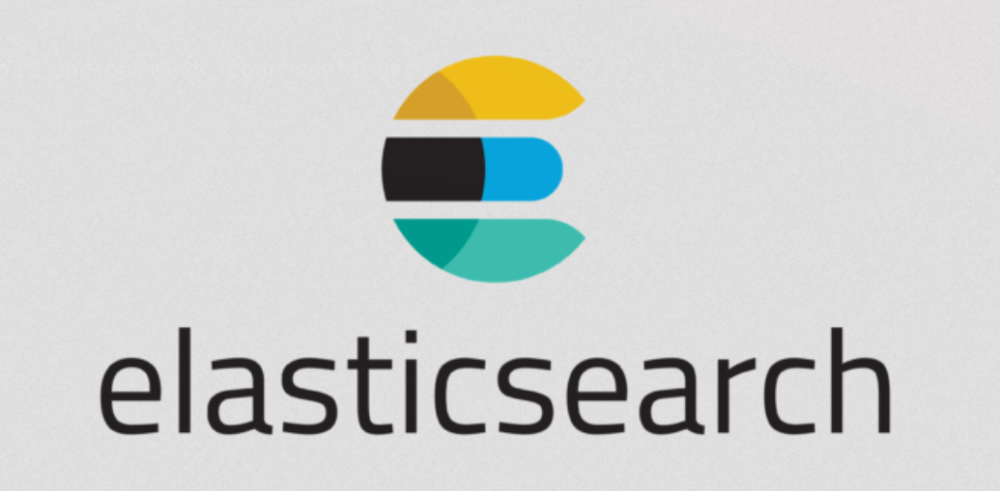

Build a module that alow us to do direct queries from ANB to Siren.
Develop a methodology and a workflow of the system (documentation, tools, expertise)
Actually
Done
beginning of a road map with date
Beginning of the project (starting point)
General documentation (situation)
Siren queries langage
Extention of elastic search search API
JSON instruction (REST API like query)
Based on a abstract tree syntax
Elastic search

elastic_search
Query DSL
Elasticsearch provides a full Query DSL (Domain Specific Language) based on JSON to define queries. Think of the Query DSL as an AST (Abstract Syntax Tree) of queries, consisting of two types of clauses: